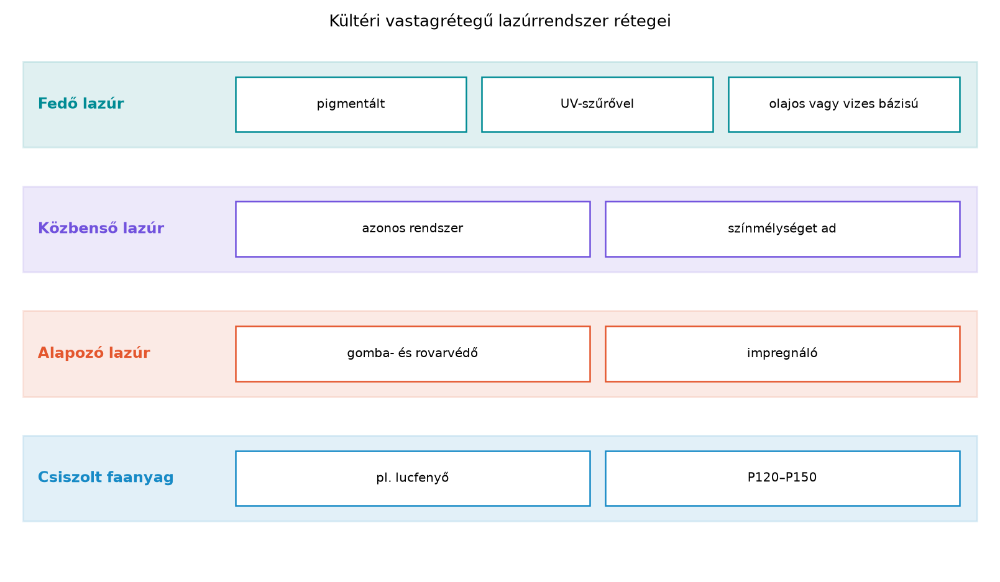

A vevő kerti bútort, faablakot vagy régi asztalt hoz. Azt kéri, hogy a fa erezete látszódjon, a felület természetes maradjon, és a bútor karbantartható legyen. A zárt filmréteget adó lakkok mellett ugyanis létezik egy másik felületkezelő család: a lazúrok, olajok és viaszok. Ha ezeket nem ismered, rossz anyagot választasz, ragacsos vagy foltos lesz a felület, a kültéri fa néhány év alatt elszürkül, korhadni kezd. A politúrozás pedig a hagyományos, magasfényű, „mélységi” fa felület készítésének alaptechnikája, amelyet a restaurálásban is használnak.
Ebben az alfejezetben először a lazúrokat, utána az olajokat, a viaszokat, a bio felületkezelőket és a politúrozást tanulod meg. Az elmélet mellett konkrét felhordási technológiát, ellenőrzési pontokat, tipikus hibákat és karbantartási tanácsokat kapsz.
Képzeld el egy kerti pad tölgyfa ülőlapját. A felületén a pórusok nyitva vannak, ezért az esővíz és a pára be tud hatolni. Egy jó kültéri lazúrrendszer három vékony rétegből áll:

Az ábra felülről lefelé mutatja a rétegeket. A legalsó réteg maga a fa, amelyet a lazúrozás előtt megcsiszoltál. Fölötte az alapozó lazúr védi a fát a gombák és rovarok ellen, a középső réteg adja a színmélységet, a fedő réteg pedig véd a napsütéstől és az esőtől. Ez a rétegrend gyakoribb a kültéri fa védelménél, mint egyetlen vastag lakkréteg.
Definíció. A lazúr olyan híg, pigmentált vagy színezett bevonat, amely vékony réteget képez, és a fa erezetét láthatóvá hagyja. A pigmentek a színt és az UV-védelmet adják, a kötőanyag (gyanta, olaj, diszperzió) pedig a felületet védi. A lazúr lehet vékony rétegű vagy vastag rétegű.
A vékony rétegű lazúr beszívódik a fába, alig képez filmet, gyorsan felhordható, de rövidebb ideig véd. A vastag rétegű lazúr kissé vastagabb réteget hagy, jobban véd, de idővel lepattoghat, ha túl vastagon hordod fel. A kettő közötti határ nem éles, a gyártói elnevezések eltérhetnek. Felhasználási szabály: méretpontos kültéri szerkezethez (ablak, ajtó) vastag rétegű lazúr ajánlott, mert a film korlátozza a nedvességfelvételt és a vetemedést; a vékony rétegű lazúr nem méretpontos elemekhez (kerítés, pergola, burkolat) való, ahol a könnyű felújítás fontosabb (ellenőrizendő: gyártói rendszerleírás).
A vizes lazúr vizes bázisú, szaga enyhébb, szerszámai vízzel tisztíthatók. Az oldószeres lazúr oldószeres bázisú, mélyebben behatol a gyantás, tömör fába is, de erős szagú, tűzveszélyesebb, és a hulladékot veszélyes anyagként kell kezelni (ellenőrizendő: a termék biztonsági adatlapja).
Definíció. Az olajozás olyan felületkezelés, amelynél természetes vagy mesterséges olajat (lenolaj, tungolaj, kemény viaszolaj) viszünk fel, amely beszívódik a fa rostjai közé, és ott köt meg. A felület nyitott marad, javítható és utánolajozható. A kemény viaszolaj olaj és viasz keveréke, amely a beszívódás mellett vékony, tapintható védőréteget is ad.
Definíció. A viaszolás viasz (méhviasz, karnaubaviasz, szintetikus viasz) vékony felhordása, amely bársonyos fényt ad, nem zár teljesen, és gyakran bútorok belső felületén, antik darabokon vagy politúr utáni ápolásra használják. A viasz nem ellenálló vízzel és vegyszerekkel szemben, ezért kültéren önállóan ritkán alkalmazzák.
Definíció. A politúrozás hagyományos, magasfényű felületkezelés, amely sellak (természetes gyanta) alkoholos oldatából (politúr) készül, olajos kenéssel és polírlabdával (párnával) felhordva. Vékony rétegek sokaságából áll össze, ezért „mélységi” felületként is emlegetik.
A lazúrok a fa természetes szépségét hangsúlyozzák. A kültéri lazúrok pigmentet vagy UV-abszorbert tartalmaznak, hogy a napfény ne szürkítse el a fa felületét. Beltéri lazúroknál elegendő lehet a színezőanyag, mert nincs közvetlen UV-terhelés.
Szabály. A kültéri lazúrrendszert mindig azonos gyártó azonos rendszeréből válaszd. Az alapozó, a közbenső és a fedő réteg kémiailag úgy van összehangolva, hogy ne váljanak el egymástól, és együtt adják a védelmet. Különböző gyártók termékeinek keverése rétegleválást, foltosodást vagy elégtelen védelmet okozhat (ellenőrizendő: gyártói rendszerleírás).
A kültéri lazúrozás lépései röviden:
Karbantartás kültéren. A lazúrozott felületet évente egyszer tiszta vízzel, enyhe mosószerrel tisztítsd, és ellenőrizd a felület állapotát. Ha a víz már nem gyöngyözik, vagy a felület szürkül, a fedő lazúrréteget újítani kell. A termék karbantartási ciklusát a gyártó adja meg (jellemzően 1–3 év, ellenőrizendő).
Az olajozás a legszerethetőbb természetes felületkezelés: a fa tapintása meleg marad, a sérülések helyben javíthatók, a felület légáteresztő. Népszerű konyhai munkalapokon, vágódeszkákon, kerti bútorokon és játékokon.
A lenolaj. A nyers lenolaj nagyon lassan szárad, ezért főtt lenolajat vagy lenolajkencét használnak, amely szikkatív anyagot tartalmaz (ellenőrizendő: gyártói adatlap, mert a fém-szikkatív tartalom eltérhet). A lenolaj besötétíti a fát, meleg árnyalatot ad, és idővel kissé sárgulhat. Vízállósága közepes.
A kemény viaszolaj. A kemény viaszolaj általában természetes olajok (lenolaj, tungolaj) és viaszok (karnauba, méhviasz) keveréke, oldószerrel hígítva. Bedörzsölés után a felesleget le kell törölni, mert a felületen maradt olaj ragacsos, poros réteget ad.
Az olajozás technológiai lépései (felhasználási példa: konyhai tölgyfa munkalap):
Figyelem. Az olajjal átitatott rongy, szivacs vagy csiszolópor öngyulladást okozhat. Az olaj száradása közben hő termelődik, és ha a rongyot összegyűrve, zárt helyen tárolod, a hő nem tud eltávozni, a rongy meggyulladhat. Tilos az olajos rongyot összegyűrve a szemetesbe dobni vagy a műhelyben hagyni. Helyes gyakorlat: a rongyot tűzbiztos fémtálcán, egy rétegben kiterítve hagyd megszáradni, majd vízzel átitatva, lezárt fémdobozba tedd, és veszélyes hulladékként kezeld (ellenőrizendő: helyi hulladékgazdálkodási előírás).
Karbantartás olajozott felületen. Az olajozott munkalapot rendszeresen, jellemzően 3–6 havonta (használattól függően) vékonyan újra kell olajozni. Karcok helyben, csiszolás után újraolajozással javíthatók. Ne használj erős lúgos tisztítószert, mert az kiszívja az olajat.
A viaszolás egyszerű, de karbantartásigényes felületkezelés. A viasz nem képez zárt filmet, ezért beltéri bútoroknál, antik daraboknál, faragványoknál és politúr ápolására használják. Kültéren csak akkor, ha időjárástól védett helyen van a tárgy.
Anyagok és jellemzőik.
A viaszolás technológiája:
Tipikus hiba. A viasz túl vastag felhordása ragacsos, foltos felületet ad. Ha ezt tapasztalod, töröld le a felesleget, és polírozd újra. Ha a felület már megszáradt, enyhén melegítheted (például hajszárítóval óvatosan, tűzveszélyt elkerülve), hogy a viasz ismét kenhetővé váljon.
A „bio” vagy „természetes” felületkezelőkre nincs egységes, kötelező minősítés, ezért a gyártói adatlapot mindig ellenőrizni kell. Az ilyen termékek általában növényi olajokból, természetes gyantákból, méhviaszból és növényi oldószerekből állnak, és gyakran alacsony illékony szerves anyag (VOC) kibocsátásúak (ellenőrizendő: a termék műszaki adatlapja és biztonsági adatlapja, valamint a hatályos VOC-előírás). Léteznek tanúsított, beltéri levegő szempontjából vizsgált termékek, de a jelölés terméktől és országtól függ (ellenőrizendő: aktuális tanúsítvány).
A bio olajok és viaszok technológiája hasonló a hagyományos olajokéhoz: vékonyan felhord, beszívódást vár, felesleget letöröl, közbecsiszol, majd második réteg. Fontos, hogy a száradási idő hosszabb lehet, és a felület karbantartása gyakoribb. Ha a vevő étellel érintkező felületre kér bevonatot, ellenőrizd, hogy a termék élelmiszer-biztonsági szempontból megfelel-e (például játékokra, vágódeszkára jelölt termék).
A politúrozás a faipar klasszikus magasfényű felületkezelése. A sellak egy Indiában és Délkelet-Ázsiában élő rovar (lakktetű) által kiválasztott gyanta, amelyet alkoholban oldanak. Az alkohol elpárolog, a sellak vékony, kemény, fényes réteget hagy hátra. A politúr a sellak és a denaturált szesz (alkohol) oldata; a felhordáshoz olajat (például lenolajat) használnak kenőanyagként, hogy a polírlabda ne ragadjon le.
Politúrozási alaplépések (tömörfa asztallapon):
Megjegyzés. A politúrozás kézi munkája lassú, gyakorlatot igényel. A teljes, múzeumi szintű restaurálás meghaladja ennek a könyvnek a kereteit; itt a hagyományos eljárás alaplépéseit tanulod meg, hogy kisebb felületeket, javításokat el tudj végezni.
Restaurálás röviden. A régi politúrozott felületek javításánál először tisztítsd a felületet, vizsgáld meg a károsodást. Kisebb karcolásoknál a sellakot alkohollal oldva, vékonyan visszapolírozhatod. Ha a felület lepattogzott, a sérült részt tisztítsd, csiszold, majd a környező réteggel megegyező sellakkal építsd vissza. A történeti bútoroknál a teljes restaurálást szakember végzi, mert az érték megőrzése külön ismereteket igényel.
A felületkezelő anyag mennyiségét a felület és a gyártói fajlagos felhordás alapján számolod.
Összefüggés. A szükséges anyagmennyiség:
ahol:
Számítás. Egy kerti pad ülőlapja és támlája összesen felület. A kiválasztott kültéri lazúr fajlagos felhordása rétegenként. Két réteget viszel fel. Mennyi lazúrra van szükség?
Tehát körülbelül 288 gramm lazúrt használsz fel. A gyakorlatban a veszteséget is számold bele (például 10–15%), és a kiadósságot a gyártói adatlapon ellenőrizd (ellenőrizendő).
Cél. Időjárásálló, a fa erezetét mutató felület kialakítása kültéri fenyőpadon.
Anyagok.
Gépek és szerszámok.
Gépbiztonság. A művelet betanított, felügyelt tanulónak szól; védőberendezés nélkül, egyedül, fáradtan ne dolgozz. A csiszológépet csak a burkolattal, a porgyűjtővel és a gépkönyv szerint használd. Viselj légzésvédőt (FFP2, ha porképződés várható), védőszemüveget, és a vegyszerhez kesztyűt, hosszú ujjú ruhát; oldószeres lazúrnál biztosíts szellőzést, tilos a nyílt láng és a dohányzás.
Lépések ellenőrzési pontokkal.
A lazúrozott felületet szemrevételezéssel ellenőrizd.
Ha eltérést találsz, a hibát a következő réteg előtt javítsd: foltnál csiszold vissza és kend át, csorgásnál töröld le és dolgozd el.
Egy asztalos műhelybe bejött egy vevő, akinek a konyhai tölgyfa munkalapja elszürkült és foltos lett. A vizsgálat során kiderült, hogy a felületet korábban egyszerű növényi olajjal kenték, és a karbantartást évekig elhagyták. A helyes megoldás az volt, hogy a munkalapot P120, majd P180 szemcseméretű csiszolóanyaggal visszacsiszolták, a port eltávolították, majd két réteg, konyhai munkalapra szánt kemény viaszolajat hordtak fel. Az első réteg beszívódása után a felesleget letörölték, másnap finom csiszolással (P320) simították, és a második réteget is felhordták. A vevőt megtanították arra, hogy 3–6 havonta vékonyan olajozni kell, és a munkalapot ne érje hosszú ideig álló víz. A hiba tanulsága: a természetes felületkezelés nem egyszeri, hanem ciklikus karbantartást igényel.
1. feladat (A)
Határozd meg röviden: mi a különbség a vékony és vastag rétegű lazúr
között? Melyiket választanád kültéri ablakra (méretpontos szerkezet), és
melyiket kerítésre?
2. feladat (A)
Igaz vagy hamis? Indokold is. a) A vizes lazúr csak vízzel hígítható, az
oldószeres pedig hígítóval. b) A viasz kiváló kültéri önálló bevonat. c)
A politúrozás gyors, egyrétegű felületkezelés.
3. feladat (B)
Egy beltéri fenyőpolc felülete 1,2 m². A gyártó szerint a kemény
viaszolaj fajlagos felhordása 70 g/m² rétegenként. Három réteget
tervezel. A termék kiszerelése 500 ml, sűrűsége 0,9 kg/l (tájékoztató).
Számítsd ki, mennyi anyag szükséges (tömegben), és állapítsd meg, elég-e
egy doboz?
4. feladat (B)
Írj rövid technológiai tervet egy kültéri lucfenyő kerti szék
lazúrozásához: sorold fel a csiszolási lépéseket, a rétegeket és a
száradási ellenőrzést.
5. feladat (C)
Hibaelemzés: egy viaszolt diófa komód felülete ragacsos, foltos. Milyen
hibalehetőségeket vizsgálnál meg, és mi a legvalószínűbb ok? Mi a
megoldás?
6. feladat (D)
Egy régi, politúrozott asztallap egyik sarkán a felület lepattogzott.
Írj gyakorlati javítási tervet: milyen anyagokat készítesz elő, milyen
lépésekkel állítod helyre a felületet, és milyen biztonsági előírásokat
tartasz be?
Önellenőrzés – válaszok
1. feladat (A)
A vékony rétegű lazúr beszívódik, alig képez filmet, a fa erezete
teljesen látható; felújítása egyszerű, de rövidebb karbantartási
ciklusú. A vastag rétegű lazúr vékony filmet képez, jobban véd, de
vastagon felhordva lepattoghat. Kültéri ablakra – méretpontos szerkezet
– vastag rétegű lazúrrendszert választanék (a film korlátozza a
nedvességfelvételt, így az ablak nem vetemedik, nem szorul be); vékony
rétegű lazúrt nem méretpontos elemekhez (kerítés, burkolat, pergola)
választanék, ahol a könnyű felújítás a fontosabb (ellenőrizendő: gyártói
rendszerleírás).
2. feladat (A)
a) Hamis. A vizes lazúr általában vízzel hígítható, az oldószeres lazúr
a gyártói hígítóval; de a mondat fordítva is téves lehet, mert mindig a
termék adatlapján kell ellenőrizni. b) Hamis. A viasz rossz vízállóságú,
ezért kültéren önállóan ritkán alkalmazzák. c) Hamis. A politúrozás sok
vékony réteg felhordása, lassú, kézi munka.
3. feladat (B)
Szükséges anyag tömegben:
Az 500 ml-es doboz tömege a sűrűségből:
Mivel 252 g < 450 g, egy doboz elég, de a gyakorlatban számolj veszteséget is (például 10–15%), így is belefér. (Az adatok tájékoztatók, ellenőrizendő a gyártói adatlapon.)
4. feladat (B)
Terv röviden:
5. feladat (C)
Vizsgálnám a viasz mennyiségét, a felhordás módját és a polírozást.
Legvalószínűbb ok: túl vastagon felhordott viasz, amelyet nem políroztak
ki időben, vagy a rétegek között nem hagytak száradási időt. Megoldás: a
felesleget tiszta ronggyal letörölni, a felületet enyhén melegítve
újrapolírozni; ha nagyon vastag, akkor finoman visszacsiszolni,
portalanítani, majd vékonyan újra viaszolni.
6. feladat (D)
Anyagok: sellak, denaturált szesz, lenolaj, finom csiszolóanyag
P400–P600, acélgyapot 0000, tiszta pamutrongyok, polírlabda.
Lépések:
Biztonság: szellőztetés, kesztyű, tűzveszély miatt nyílt láng tilos, az olajos rongyot kiterítve tárold, majd zárt fémdobozban gyűjtsd veszélyes hulladékként.
A lazúrok, olajok, viaszok és a politúr a fa természetes felületkezelői. A lazúr vékony vagy vastag rétegű, vizes vagy oldószeres bázisú; kültéren rendszerben, alapozó, közbenső és fedő réteggel hordd fel, a gyártói utasítás szerint. A vékony rétegű lazúr beszívódik, a vastag rétegű vékony filmet képez. A kültéri lazúrozott felületet évente ellenőrizni és szükség szerint újítani kell. Az olajozás (lenolaj, kemény viaszolaj) nyitott pórusú, javítható felületet ad; a felesleget mindig le kell törölni. Az olajos rongy öngyulladását úgy előzöd meg, hogy kiterítve szárítod, majd zárt fémdobozban tárolod. A viaszolás bársonyos fényt ad, de rossz vízállóságú, ezért inkább beltéri. A bio felületkezelők természetes alapanyagúak, de a jelölést és a tanúsítványt ellenőrizni kell. A politúrozás sellak alkoholos oldatából, sok vékony rétegben, polírlabdával és olajkenéssel készül; restauráláshoz is használják. Továbbvitt eredmény. A természetes felületkezelések (lazúr, olaj, viasz, politúr) karbantartási ciklusát és hibáit használjuk a Felületkezelési hibák és a felületkezelési számítások alfejezetben, ahol a felületkezelési rendszereket és anyagszükségletet együtt számoljuk.
Forrástípusok. Gyártói műszaki adatlapok és biztonsági adatlapok, faipari szakkönyvek (felületkezelés, restaurálás), hatályos magyar és európai előírások a VOC-kibocsátásról, vegyi anyagokról (CLP, REACH), tűzvédelemről és hulladékkezelésről.
Ellenőrizendő pontok. A kültéri lazúrok ajánlott fanedvességi tartománya, csiszolóanyag-szemcseméretek, felhordási mennyiségek, száradási idők, karbantartási ciklusok; a bio termékek tanúsítási jelölései; az olajos rongy tárolására vonatkozó helyi előírások; a politúr sellak–szesz aránya és a rétegszám. A megadott számértékek tájékoztatók, nem kivitelezési előírások; mindig a gyártói adatlap és a hatályos szabályozás a mérvadó.